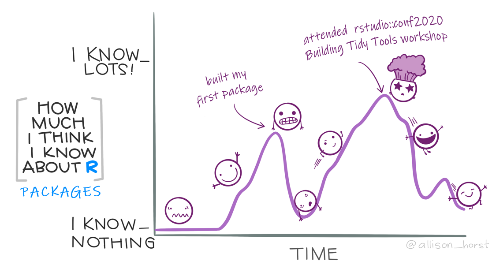
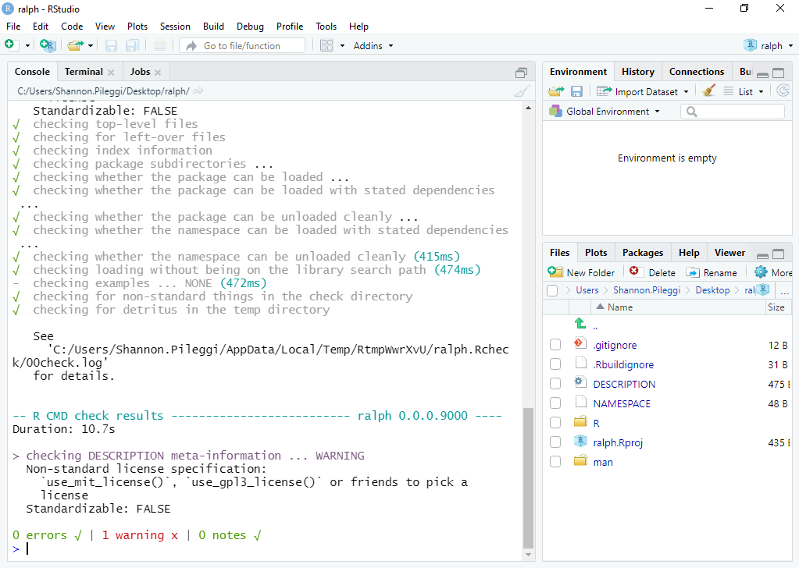
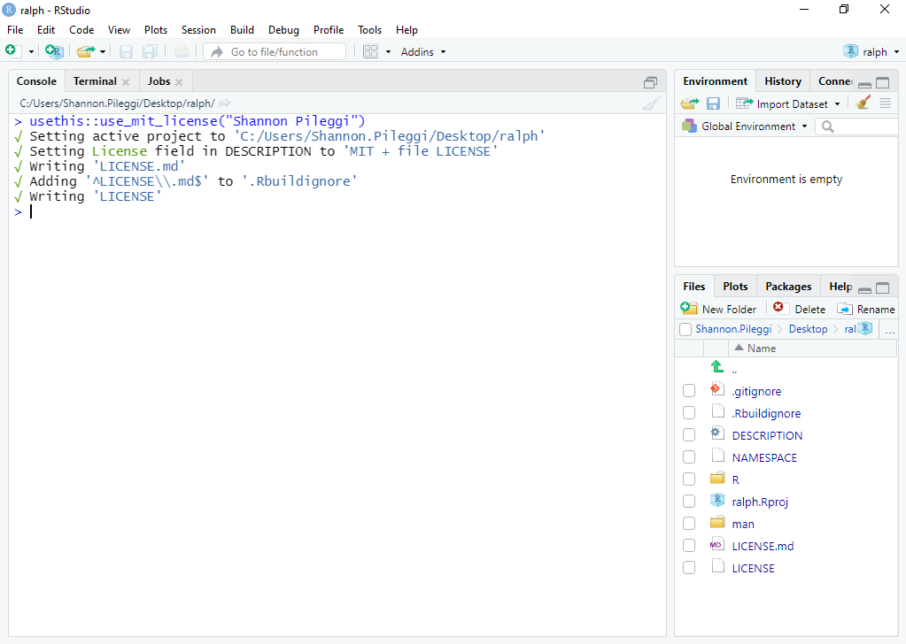
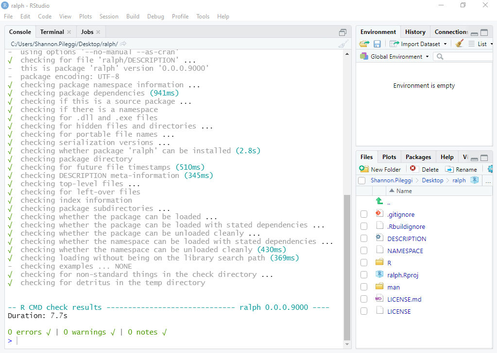
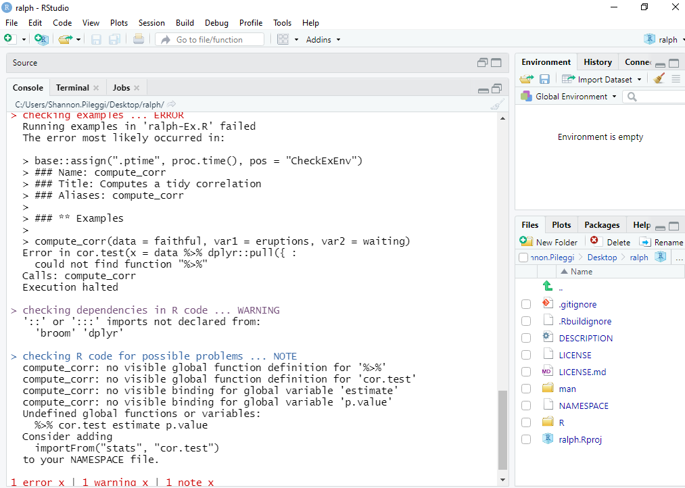
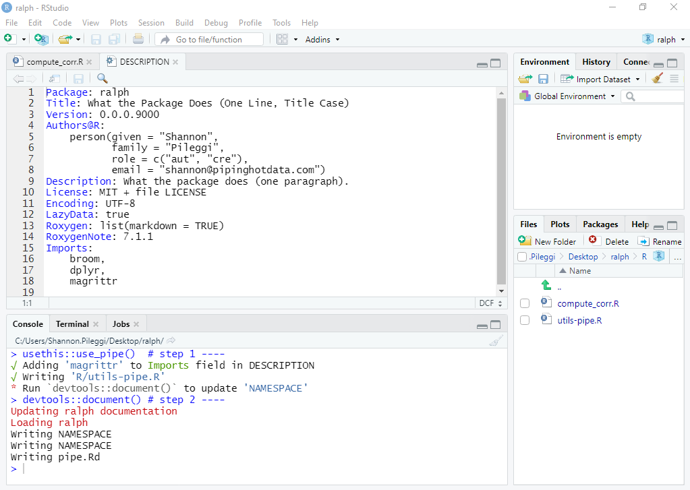

Table of Contents
TL; DR
This blog post accompanies the R-Ladies Philly workshop on November 12, 2020. We demonstrate how leveraging the devtools and usethis packages in package development can automate folder structure and file creation, speeding up the development process.
Abstract
This workshop is for people looking to learn how to make their own R packages and learn how to use usethis and devtools for package development. The workshop will cover handy one time functions (i.e., usethis::create_package) as well as functions used continuously throughout package development (i.e., devtools::document). At the end of the hour you should have a working, well-documented package with a single function, as well as a better understanding of the files and file structure required for R packages.
This workshop is suitable for beginner to intermediate R users. Attendees should be familiar with functions, but will not be writing their own function in this workshop. Familiarity with pipe or tidyverse is helpful.
Disclaimer

I have learned enough about package development to share with you what has worked well for me; however, I am still learning! Comments and suggestions are welcome.
Getting started
This material was developed using:
| Software / package | Version |
|---|---|
| R | 4.0.3 |
| RStudio | 1.3.1073 |
devtools |
2.3.2 |
usethis |
1.6.3 |
tidyverse |
1.3.0 |
rlang |
0.4.8 |
broom |
0.7.1 |
Please install and update all software / packages prior to following along, as otherwise errors may arise.
Tool kit
Single usage functions only need to be used one time in the development process; multiple usage functions are executed as needed. This table only contains functions used in this workshop; there are many other handy functions in devtools and usethis for package development.
| Usage | Function | Purpose |
|---|---|---|
| Single | usethis::create_package("path/package") |
initialize package |
usethis::use_mit_license("Your name") |
add license | |
usethis::use_pipe() |
add pipe function as a dependency | |
| Multiple | devtools::check() |
build package locally and check |
devtools::load_all() |
load functions in 📂 R/ into memory |
|
usethis::use_r("function") |
create R script for function | |
usethis::use_package("package") |
add package dependency | |
devtools::document() |
build and add documentation |
Other resources:
Package development cheat sheet
R packages book by Hadley Wickham and Jenny Bryan
How to develop good R packages by Maëlle Salmon
R Package Primer by Karl Broman
First package
Open an R session and submit the following, modified to your desired location. Here, I am creating a package named ralph on my desktop. (This name is inspired by R-Ladies Philly.)
usethis::create_package("C:/Users/Shannon.Pileggi/Desktop/ralph")
Now you have a package! The usethis::create_package function:
Creates a new R project named
ralphat your specified location.Opens the
ralphproject in a new RStudio session.Creates the minimal essential files and structure required for R packages.
Optional:
If you are already authenticated, the usethis package has some handy functions to quickly connect your local package to a GitHub repository,
usethis::use_git() # step 1 ----
usethis::use_github() # step 2 ----For more references on using git / GitHub, see Jenny Bryan’s Happy Git and GitHub for the useR or Ch 18 in R Packages by Hadley Wickham and Jenny Bryan.
First check
Now that we have a package, let’s check it. Submitting devtools::check() updates package documentation, builds the package, and submits over 50 checks for metadata, structure, R code, documentation, and more!
devtools::check()This can take a while to run, depending on how big your package is. It is helpful to run frequently, especially if you are planning on submitting to CRAN. But even for internal packages, it is still good practice.
Our first check results in a single warning - that our package needs a license in the DESCRIPTION file:

To fix this, add the license of your choice. A standard recommendation is the MIT license due to broad permissions.
usethis::use_mit_license("Shannon Pileggi")This updates the description file, as well as creates two new license files in your project that you never have to touch.

You can go back and complete the remaining DESCRIPTION fields later. Re-submit
devtools::check()and our package is error, warning, and note free.

First function
Create
The compute_corr function is a wrapper for cor.test that produces tidy output for Pearson’s correlation estimate (along with a p-value) to quantify the linear relationship between two quantitative variables.
compute_corr <- function(data, var1, var2){
# compute correlation ----
cor.test(
x = data %>% dplyr::pull({{var1}}),
y = data %>% dplyr::pull({{var2}})
) %>%
# tidy up results ----
broom::tidy() %>%
# retain and rename relevant bits ----
dplyr::select(
correlation = estimate,
pval = p.value
)
}Let’s add the compute_corr function to ralph.
usethis::use_r("compute_corr")This creates a blank R script named compute_corr.R located in the R/ folder. It is convention that your function name and R script name are the same. Copy and paste the function to the blank R script, and then save.

Execute
Take your function for a test drive with devtools::load_all (“arguably the most important part of the devtools workflow”).
devtools::load_all()This places your function in local memory so that you may tinker and confirm its execution. Let’s give it a try.
compute_corr(data = faithful, var1 = eruptions, var2 = waiting)
# A tibble: 1 x 2
correlation pval
<dbl> <dbl>
1 0.901 8.13e-100Document
Next document the compute_corr function using the Roxygen skeleton. First, place your cursor in the function definition, and then you can add the skeleton two ways:
Code -> Insert Roxygen Skeleton, orCntrl + Alt + Shift + R
You should see this:

where we now have an outline to fill in. Note that the three arguments in our function (data, var1, var2) were automatically detected. Update the documentation as follows:
#' Computes a tidy correlation
#'
#' @param data input data set
#' @param var1 name of variable 1
#' @param var2 name of variable 2
#'
#' @return A tibble with the Pearson correlation and the p-value
#' @export
#'
#' @examples
#' compute_corr(data = faithful, var1 = eruptions, var2 = waiting)Save your function and submit:
devtools::document()This did a lot of work for you!

The
manfolder (short formanual) now contains a file calledcompute_corr.Rd. This is the documentation for your function; you never edit this manually.The
NAMESPACEnow specifies that the package will export thecompute_corrfunction.
Preview the documentation with:
?compute_corr
If you want to modify your documentation, make the changes in the Roxygen skeleton in compute_corr.R, save, and then resubmit devtools::document().
Check
Now submit
devtools::check()and you’ll see that we have some concerns.

This is because compute_corr depends on functions from other packages, such as:
The pipe function (
%>%) from themagrittrpackage.The
tidyfunction from thebroompackage.The
selectfunction from thedplyrpackage.The
pullfunction from thedplyrpackage.
Dependencies
We can fix these errors, warnings, and notes by specifying the dependencies in the compute_corr function.
1. Package dependencies
To specify a package dependency, the name of the package needs to be listed in the DESCRIPTION file. This can be automatically done for you by submitting
usethis::use_package("broom")
usethis::use_package("dplyr")
2. Functions within packages
There are three ways you can specify required functions within packages.
Use the
::notation within your function, as inbroom::tidy(recommended, used in this post).In the Roxygen section of your function, use
@importFrom pkg fun1 fun2- if you prefer this over using::.In the Roxygen section of your function,
@import pkg- imports all functions from a package; use sparingly/wisely as this makes your package bulkier.
Special case
The pipe function (%>%) from the magrittr package is a special case. The easiest way to include the pipe is
usethis::use_pipe() # step 1 ----
devtools::document() # step 2 ----Here, step 1 creates utils-pipe.R in your R folder and adds magrittr to imports in the DESCRIPTION file; step 2 adds the pipe to your NAMESPACE file.

Now let’s run the check again:
devtools::check()Can you diagnose the note(s) this time? What steps would you take to correct it? I’m saving this for discussion in the workshop.1

Installing your package
Open a new R session. Install your package from your local directory or GitHub, load your package, and execute your functions.
# install package from local directory ----
devtools::install("C:/Users/Shannon.Pileggi/Desktop/ralph")
# or install package from GitHub ----
# devtools::install_github("shannonpileggi/ralph")
# load package ----
library(ralph)
# execute function ----
compute_corr(data = faithful, var1 = eruptions, var2 = waiting)
# A tibble: 1 x 2
correlation pval
<dbl> <dbl>
1 0.901 8.13e-100Summary
I hope you feel empowered to start developing your own packages now! We went through many of these steps one time only; however, in the development process, some of these steps are iterative. Here is a recap of our steps, although your work flow may differ.
| Step | How |
|---|---|
| 1. Load development packages. | library(usethis), library(devtools) |
| 2. Create new package. | usethis::create_package("path/package") |
| 3. Optional: Connect to GitHub repo. | usethis::use_git(), usethis::use_github() |
| 4. Check build. | devtools::check() |
| 5. Add license. | usethis::use_mit_license("Your name") |
| 6. Check build. | devtools::check() |
| 7. Create new function. | usethis::use_r("function") |
| 8. Test drive function. | devtools::load_all() |
| 9. Insert Roxygen skeleton. | Menu -> Code -> Insert Roxygen Skeleton |
| 10. Document package. | devtools::document() |
| 11. Check build. | devtools::check() |
| 12. Specify package dependencies. | usethis::use_package("package") |
| 13. Specify functions within packages. | package::function |
| 14. Document package. | devtools::document() |
| 15. Check build. | devtools::check() |
| 16. Install package. | devtools::install("path/package"), or |
devtools::install_github("user/repo") |
Acknowledgements
Thank you R-Ladies Philly for hosting this workshop! Chun Su kindly created the thumbnail image for this workshop, as well as provided feedback on this post and the workshop content (thank you for so generously sharing your time!). On R-Ladies slack, Mayra Valdés exchanged some ideas with me regarding different ways to write the compute_corr function and Jenny Bryan helped me better understand where {{ lives and how it works. I learned much of this content from attending the rstudio::conf2020 Building Tidy Tools workshop co-instructed by Charlotte Wickham and Hadley Wickham. Shout out to Hillary Parker for showing us all how to build packages from scratch in 2014.
In the
compute_corrfunction we failed to specify that thecor.testfunction is from thestatspackage (which is loaded by default on start up). Update thecompute_corrfunction withstats::cor.test, and thendevtools::check()again. The notes regarding no visible binding… remain; solve with the .data pronoun. (1) Addrlangto yourDESCRIPTIONfile withusethis::use_package("rlang"). (2) Include#' @importFrom rlang .datain the Roxygen section of your function documentation. (3) In thecompute_corrfunction, replaceestimatewith.data$estimateandp.valuewith.data$p.value. The link to the error, warning, and note freeralphpackage on github will be updated here after the workshop.↩︎